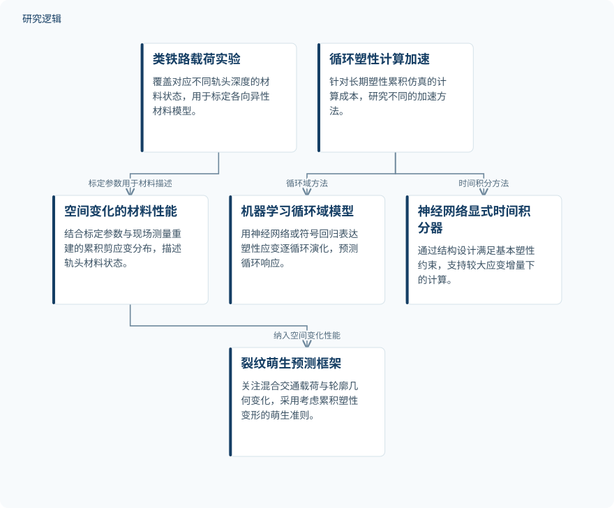

摘要解读
高度变形钢轨钢的裂纹萌生预测：塑性建模、机器学习加速与疲劳准则
Predicting crack initiation in highly deformed rail steel; Plasticity modeling, machine-learning-accelerated plasticity simulations, and fatigue criteria
解读更新 2026-10-29 22:56 · 依据公开摘要整理，未核验全文细节
钢轨表层在反复滚动接触中积累塑性变形，既改变材料的疲劳行为，也增加长期仿真的难度。这篇学位论文摘要围绕裂纹萌生预测与塑性计算加速展开，阅读价值在于同时关注“材料状态是否描述准确”和“计算是否足够高效”。
文章目录
裂纹预测不能忽略已变形的钢轨表层
滚动接触疲劳（RCF）裂纹萌生常与钢轨和车轮表层积累的大塑性变形有关。这些变形会影响材料的力学与疲劳行为，并诱发各向异性。摘要指出，许多相关研究未考虑近表层变形材料的影响，而长期交通载荷下的塑性累积仿真又需要较高计算成本。
把材料状态纳入预测，再加速循环塑性计算
针对混合交通载荷下的轨头，研究利用类铁路载荷实验，标定对应不同轨头深度材料状态的各向异性模型；再根据现场样本测量重建累积剪应变分布，描述轨头材料性能的空间变化。预测框架同时关注轨头轮廓几何变化，并引入考虑累积塑性变形的改进裂纹萌生准则。
计算加速采用不同思路：循环域材料模型预测每个加载循环的峰值应力与塑性应变，并分别用神经网络和符号回归表达塑性应变的逐循环演化；另一种方法构建神经网络显式时间积分器，允许采用较大的应变增量，并通过结构设计满足基本塑性约束。
依据摘要整理的材料状态建模与塑性计算示意


概括摘要明确描述的裂纹萌生预测链条及塑性计算加速分支，不表示论文原图或未报告的实验配置。
下载 SVG图示关系说明
实线表示相邻阶段的信息流，虚线表示跨阶段联系或反馈。
类铁路载荷实验 → 空间变化的材料性能：标定参数用于材料描述；空间变化的材料性能 → 裂纹萌生预测框架：纳入空间变化性能；循环塑性计算加速 → 机器学习循环域模型：循环域方法；循环塑性计算加速 → 神经网络显式时间积分器：时间积分方法
表层状态影响预测，机器学习支持计算提速
摘要报告，预测RCF裂纹萌生时，考虑近表层变形材料及轨头轮廓几何变化具有重要意义。循环域方法中，神经网络提供较强表达能力，符号回归提供显式演化方程；两类模型在训练范围内及其之外均获得了准确预测。
对于神经网络显式时间积分器，摘要报告其在较大应变增量下保持准确性和数值稳健性。材料点与有限元仿真展示了较高精度、泛化能力和计算时间的显著减少，但摘要未给出具体误差或加速幅度。
摘要尚不足以界定验证边界
仅凭摘要，无法判断实验及现场样本的数量、材料与载荷覆盖范围，也无法确定比较基线、误差指标和计算耗时的测试条件。“训练范围之外”的具体跨度、裂纹萌生预测的验证方式，以及不同加速方法是否直接比较，仍需查阅正文；这些信息未在摘要中报告，不代表论文没有开展相关工作。
阅读启发：分别审视物理描述与加速边界
阅读启发：面向疲劳可靠性与智能运维，可重点追问材料状态如何传递到裂纹萌生判据，以及机器学习加速在什么载荷和材料范围内有效。进一步阅读时，宜区分塑性响应预测准确与裂纹萌生预测准确这两个层次，不宜直接把仿真加速理解为已经验证了维护决策效果。
以上为本站阅读启发与建议，不是论文已验证的结论。